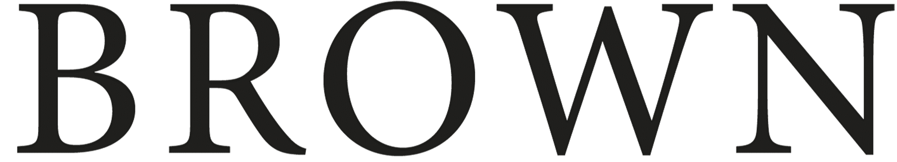
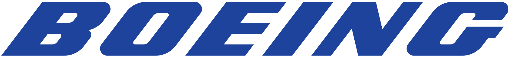

Causal Representation Learning with Partially Observable Sources
Kwonho Kim, Inwoo Hwang, Heejeong Nam, Sanghack Lee
Under Review
I am an AI Researcher at Boeing and an incoming CS masters student at . Previously, I received B.S. degree at Yonsei University majoring in Electrical and Electronic Engineering with a minor in Astronomy. My studies will be funded by .
Currently, I am highly interested in:
Alongside, I am keen to put effort into :
| May. 2025 | I am honored to be selected as a graduate student. |
| Mar. 2025 | Our multimodal reasoning benchmark VAGUE 2.0 is released! |
| Oct. 2024 | 1 paper is accepted at AdvML-Frontiers @ NeurIPS 2024 |
| Jun. 2024 | I started research collaboration @ Causality Lab (SNU). |
| Jan. 2024 | I joined  as an AI Researcher. |
| Dec. 2023 | 1 paper is accepted at ICASSP 2024 |
| Oct. 2023 | 1 paper is accepted at CRL @ NeurIPS 2023 |
| Oct. 2023 | Selected as a NeurIPS 2023 Volunteer. |
| Sep. 2023 | I started Industry-Academic Cooperation @ LinqAlpha. |
| Sep. 2023 | 1 paper is accepted in 4th Korea Artificial Intelligence Conference. |
| Oct. 2022 | I starteed my internship at AITRICS (~Feb '23). |
| Jun. 2022 | I starteed my internship at VRL @ UCSB. (~Sep '22) |
* indicates equal contribution.
| AI Researcher, Boeing Korea Engineering and Technology Center , Jan 2024–Present |
| B.S. (EE), Yonsei University , Mar 2019–Feb 2024, |
| AI Research Intern, Linq Labs , Sep 2023–Dec 2023 |
| AI Research Intern, AITRICS , Oct 2022–Feb 2023 |
| AI Research Intern, Vision Research Lab at UCSB , Jun 2022–Sep 2022 |
| Exchange Student (ECE), University of California, Los Angeles , Winter, Spring 2022 |
I love (almost all) outdoor activities. I enjoy working out, figure skating, snowboarding, swimming, and bouldering. I'm always excited to try new sports. I also like taking pictures of nature during the travel.